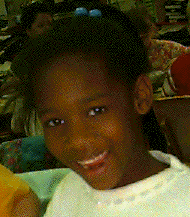

Hello, I'm Phyllis Smith.
Hello, I'm Phyllis Smith.
I currently teach first grade at Naches Trail Elementary in Bethel School
District in western Washington. Next year I will stay with my same students
and be a second grade teacher, among other things.
Beliefs about Education:
--I believe that young children deserve to be schooled in an atmosphere
of safety, mutual respect and excitement about learning. Parents, students
and teachers should expect to work very hard to build bridges between home
and school to enhance learning.
--I believe that a teacher of young children (older ones, too!) must be
an enthusiastic learner who learns from and with his/her students. I believe
that both teacher and students need to be risk-takers in exploring and creating
knowledge.
--I believe that technology can transform education only if teaching is
transformed as educators explore, with their students, ways that technological
tools can make learning more efficient and joyful. I would like to see technology
used in my classroom as casually and as appropriately as pencils and scissors.
I am trying to empower my students to manage and wisely use the classroom
technology we are so fortunate to have.




Technology:
My technology project this year was to get all my students to:
1. Learn word-processing to enable the writing process
2. Set up computers, open and close programs, save and print files, and
correctly shut down the room computers
3. Make their own webpages, in partnership with teacher and parents
Personal History:
--BA in Education.....Sterling College
--M. Education ........University of Washington (Tacoma)
--Thirty years' teaching experience in Kansas, New Mexico, France (DOD Schools),
and Washington (..and I know that I have a few good years left!)
--Bethel School District activities: Advisory Council for Technology, Trainer
of Trainers, Webpage Project, Math Piloting and Data Gathering
--Building Committees: Site Council (1990-95), Chair of Tech Committee
--I am an elder in the Presbyterian Church, a former foster parent, a member
of AAUW, NEA, PTA and Phi Delta Kappa
My personal technology project is:
To create and post webpage backgrounds on the internet. I get responses
to these from all over the world. Sometimes I make custom backgrounds for
teachers and students in other states and countries who do not have the
software to do that themselves. You can see them at this
address